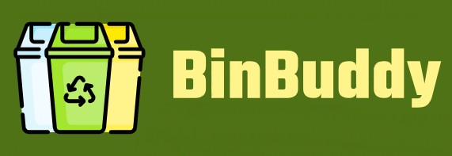
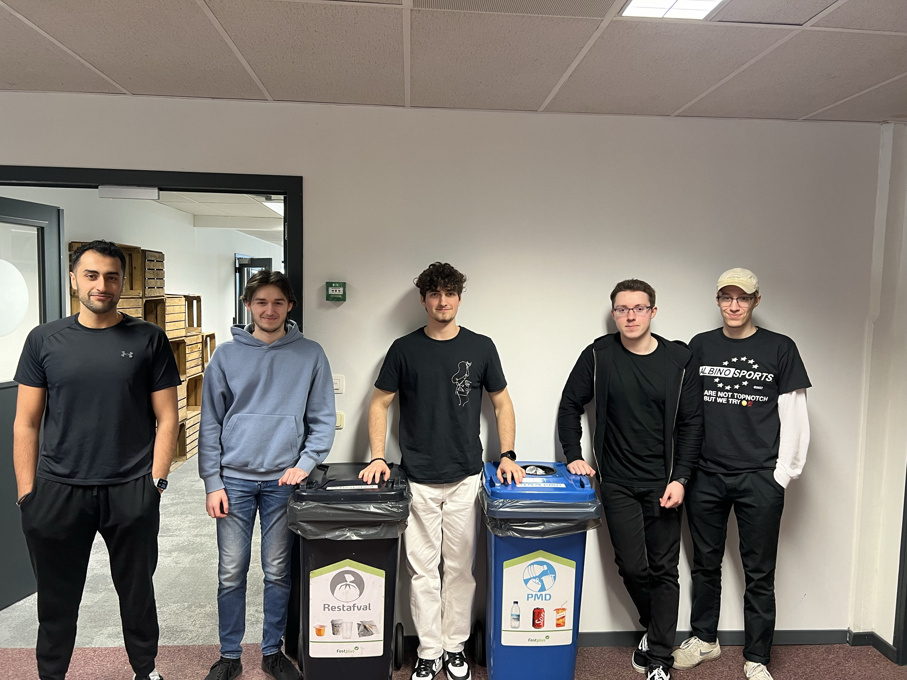

WPL 2
Beschrijving project
Voor werkplekleren 2 moesten wij in groepen van 4-5 personen werken aan een groot project.
Dit project in kwestie was het opstellen van een volledig functionele website waar je een product of dienst op verhuurt.
Ook moesten we dit bedrijf wat we moesten verzinnen koppelen aan een Sustainable Development Goal.
Voor dit project kregen we een framework en een database samen met een lijst van minimumvereiste die we moesten behalen / integreren in ons project.
Hoe we de website verder maakten, was volledig aan onze groep om te bedenken.
We moesten uiteindelijk samen te werk gaan om een aantrekkelijke en gebruiksvriendelijke
website te maken waar klanten graag het product / de dienst die we verhuren te bestellen.
BinBuddy
BinBuddy was het begin van een mooie samenwerking met een geweldig team vol plezier.
BinBuddy logo
BinBuddy team

Na een eerste brainstormsessie hadden we al een idee voor een bedrijf, namelijk BinBuddy.
BinBuddy zou vuilcontainers verhuren aan een goedkopere prijs dan de concurrentie en met een gebruiksvriendelijkere website.
We kozen dan ook voor SDG 13: klimaatactie.
De bedoeling was dat wij op een klimaatvriendelijke manier vuilcontainers zouden verhuren en deze ook zouden vervoeren met volledig elektrische vervoersmiddelen.
En wat is er nu klimaatsvriendelijker als goed sorteren en opruimen van afval.
Planning
Hier vind je het logboek / de planning van dit vak.
In het logboek vind je ook meereder afbeeldingen waarbij je een idee kan krijgen van hoe de website er uitziet.

Persoonlijke reflectie
Hier vind je een korte samenvatting / Q&A over mijn ervaring van het project
Wat vond je zelf van het project:
Als ik zo terugkijk op de afgelopen maanden dan krijg ik toch een positief gevoel.
Ookal was het niet altijd even simpel en waren er momenten van paniek met de deadlines die behaald moesten worden hebben we toch altijd alle basisvereisten optijd kunnen inleveren met meestal nog extra's die we zelf verzonnen hadden erbij.
Het project creëerde soms zeer interessante problemen die niet altijd een straight-forward manier van oplossen had.
Dit zorgde er natuurlijk voor dat je soms zeer probleem oplossend moest nadenken en dat is altijd mooi meegenomen naar een toekomstige job.
Uiteindelijk vond ik het een zeer leuk project om te doen en ben ik blij dat ik dit heb kunnen doen met mijn geweldige groep.
Heb je veel steun gehad van je teamleden en lectoren:
Zoals ik net al vermeldde had ik een geweldig team. We hadden onze taken verdeeld naar welk gedeelte elk teamlid verkoos om in te werken.
Indien er ergens problemen waren kon je altijd hulp vragen aan elkaar en er was een zeer goede sfeer in ons team.
Er werd ook altijd genoeg gelachen met elkaar waardoor we een, naar mijn mening, hechte vriendengroep zijn geworden.
Als er dan een probleem tevoorschijn kwam wat we zelf niet opgelost kregen konden we onze lectoren natuurlijk ook raadplegen.
Persoonlijk heb ik de benodigde hulp gekregen van de lectoren en dit heeft me ook vaak vooruitgeholpen waardoor ik soortgelijke problemen uiteindelijk ook zelf kon oplossen.
Wat zijn de belangrijkste zaken die je bijgeleerd hebt op technisch vlak:
Een paar van de grootste dingen die ik heb bijgeleerd zijn het tewerk gaan op meerdere niveau's van een project. Tijdens het project moesten we zelf
onze database, backend en frontend ontwikkelen. Voor mij was dit weer een laag extra dan ik zelf ooit gedaan heb en dat zorgt er wel voor dat ik er veel uit heb geleerd.
Nog een groot ding wat ik heb bijgeleerd is het werken met een vue project. Als team hadden we besloten om tewerk te gaan met vue voor de frontend. Hier had ik echter nog
nooit mee gewerkt en dat was een uitdaging om dat mezelf op te leren.
Door dit meegemaakt te hebben ben ik er wel achter gekomen dat, mocht ik willen ik een
nieuwe manier van coderen / een nieuw framework kan aanleren aan mezelf.
Hoe ben jij gegroeid in de 3 soft skills waaraan jullie als groep hebben gewerkt tijdens WPL2:
In onze groep hadden we gekozen voor de volgende 3 softskills en ik heb onderling nog mijn groeipunten erbijgezet:
- Zelfreflectie:
- Meer kritisch denken over mijn eigen werk
- Na een project of sprint nadenken over wat werk ik heb geleverd
- Na een project of sprint nadenken over wat ik beter had kunnen doen en wat goed is gegaan
- Plannen en Organiseren:
- Meer vooruit denken
- Het beter plannen van bepaalde taken zodat de deadlines behaald worden
- Samenwerken:
- Via een extern platform communiceren
- Inchecken bij teamgenoten of alles goed verloopt
- Hulp vragen aan teamgenoten indien nodig
- Op voorhand taken verdelen
Als je nog eens in een team zal werken, wat zou je dan anders aanpakken:
Om heel eerlijk te zijn zou ik niet echt iets anders doen. Het team waarmee ik heb samengewerkt functioneerde zeer goed. Alle communicatie verliep ook goed. De deadlines werden elke keer behaald en toch was er af en toe tijd om eens te lachen tussendoor.
Ik ben zeer tevreden met de manier van het in team werken die we hebben gehanteerd en dat is ook te zien aan onze website naar mijn mening.
In het algemeen, als je opnieuw zou mogen beginnen, wat zou je dan anders doen?
Deze vraag werd ons ook tijdens de demo gesteld van ons project en mijn antwoord is nogsteeds hetzelfde als toen.
Ik zou sommige funtionaliteit die wij als extra verzonnen hadden er op voorhand al hebben geintegreerd i.p.v. dit op het laatste te moeten doen.
Verder zou ik niet iets veranderen aan de manier waarop het verlopen is.